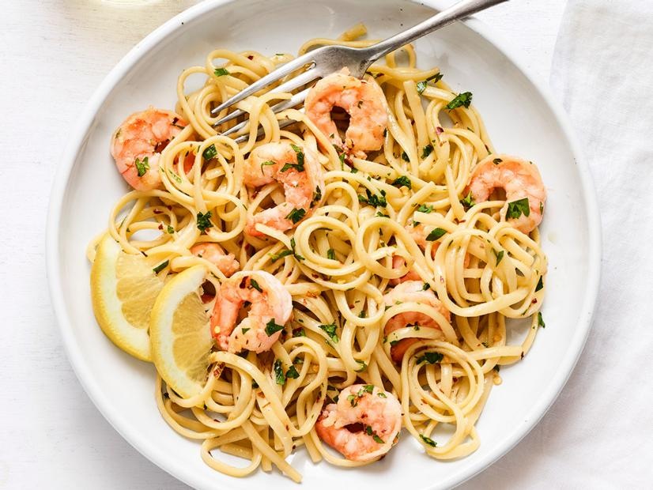

Classic Shrimp Scampi

Description
It’s one of the 10 most-searched recipes on FoodNetwork.com during the summer (more popular than burgers!) and #shrimpscampi has more than 134,000 posts on Instagram. What’s the excitement all about? Do we love shrimp scampi because it’s simple but seemingly fancy? Or because it’s done in 30 minutes?
Or because we just can’t resist a buttery wine sauce? All of the above!
Ingredients
- Kosher salt
- 12 ounces linguine
- 1 1/4 pounds large shrimp, peeled and deveined
- 1/3 cup extra-virgin olive oil
Steps
- Bring a large pot of salted water to a boil.
Add the linguine and cook as the label directs.
Reserve 1 cup cooking water, then drain.
- Meanwhile, season the shrimp with salt. Heat the olive oil in a large skillet over medium-high heat.
Add the garlic and red pepper flakes and cook until the garlic is just golden, 30 seconds to 1 minute.
Add the shrimp and cook, stirring occasionally, until pink and just cooked through, 1 to 2 minutes per side.
Remove the shrimp to a plate.
Add the wine and lemon juice to the skillet and simmer until slightly reduced, 2 minutes.